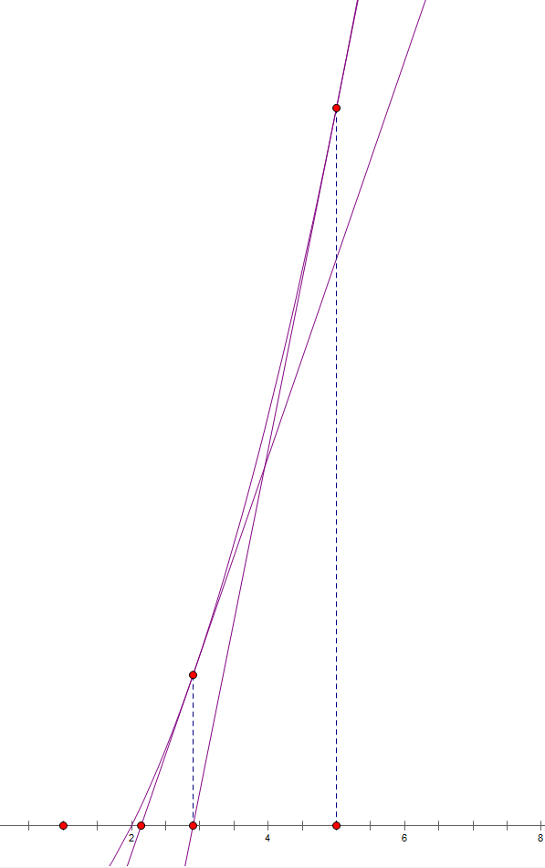

生成函数相关（未完成）。
前置知识
导数与积分
导数
函数 $f(x)$ 的 导数 $f’(x)=\lim_{\Delta x\rightarrow 0}\frac{f(x+\Delta x)-f(x)}{\Delta x}$.一阶导数记作 $f’(x)$ ,二阶导数就是对一阶导数再求导,记作 $f’’(x)$ ,同理, $n$ 阶导数就是对 $n-1$ 阶导数求导,记作 $f^{(n)}(x)$ .在区间 $(a,b)$ 内,若一阶导恒大于 $0$ ,则原函数在区间内单调递增,恒小于 $0$ ,则单调递减.
需要掌握以下求导公式与求导法则:
函数的和差积商的求导法则
设 $u=u(x),v=v(x)$ 都可导
复合函数的求导法则
设 $y=f(u)$ 而 $u=g(x)$ 且 $f(u)$ 与 $g(x)$ 都可导,则复合函数 $y=f\left[g(x)\right]$ 的导数为
积分
函数 $f(x)$ 的 不定积分 为函数 $F(x)$ ,满足 $F’(x)=f(x)$ .容易知道这样的函数有无穷多个,若 $F’(x)=f(x)$ ,则 $[F(x)+C]’=f(x)$ ( $C$ 为常数).记作
不定积分的基本性质
- 设函数 $f(x)$ 以及 $g(x)$ 的原函数存在,则
- 设函数 $f(x)$ 的原函数存在,且 $k$ 为非 $0$ 常数,则
基本积分表
一个函数的 定积分 可以形象地理解为函数 $f(x)$ 图像与 $x$ 轴在 $a,b $两端围成的有符号的面积.
有牛顿-莱布尼茨公式:
若函数 $F(x)$ 是连续函数 $f(x)$ 在区间 $[a,b]$ 上的一个原函数,则
泰勒展开与麦克劳林公式
对于一个非多项式函数,我们可以用一个多项式函数去近似它.
设需要近似的函数为 $f(x)$ ,多项式 $g(x)=a_0+a_1x+a_2x^2+\cdots$ .当我们代入 $x=0$ 的值时 $g(0)=a_0$ ,为了能够得到近似,我们此时令 $a_0=f(0)$ .而对 $g(x)$ 求导,则得 $g’(x)=a_1+2a_2x+3a_3x^2+\cdots$ ,同时对 $f(x)$ 求导得到 $f’(x)$ ,此时再代入 $x=0$ 可得到 $a_1=f’(x)$ .同理,可以知道 $f’’(0)=2\cdot 3\cdot a_3,f’’’(0)=2\cdot 3\cdot 4\cdot a_4,\cdots$.
所以,我们可以得到麦克劳林公式
即泰勒公式在$x=0$处的展开.
由于 $(e^x)’=e^x$ ,所以可以得到
由于 $(\sin x)’=\cos x,(\cos x)’=-\sin x,(-\sin x)’=-\cos x,(-\cos x)’=\sin x$ ,而代入 $x=0$ 进去得到 $0,1,0,-1$ 的循环,于是可以得到
同理可知
对于 $e^x$ 的展开,若只保留奇数次项或偶数次项,可以用双曲函数实现.
下面有几个常用的泰勒展开.
牛顿二项式定理
二项式 ${n \choose m}$ 表示在 $n$ 个物品中选 $m$ 个的方案数.可以知道,有
在这个意义下, $n,m$ 只能取非负整数.如果我们令 $n$ 为实数, $m$ 为整数,此时定义二项式系数 ${n\choose m}$ 为
牛顿依照这个,推广了二项式定理,称为牛顿二项式定理
其中 $\alpha\in R,0 \le |x| < |y|$ .由于 $(x+y)^\alpha=y^\alpha(z+1)^\alpha,z=x/y$ ,则定理可以转化为 $|z|<1$ 时,有
根据定义,我们可以得出一个上指标反转公式
复数
在自然中,最常见的数那就是自然数 $\mathbb{N}$ .自然数 $\mathbb{N}$ 对加法,乘法封闭,对减法不封闭,由此扩展出整数 $\mathbb{Z}$ .但是整数对除法并不封闭,由此又引申出有理数 $\mathbb{Q}$ .同样,有理数对开方不封闭,由此扩展出无理数.有理数与无理数统称为实数 $\mathbb{R}$ .
虽然实数是比较完备的了,但是对于这样的方程 $x^2+1=0$ 在实数域里面没有解.于是数学家就想着能否定义一个数,让它的平方等于 $-1$ ?于是就有虚数的出现.
定义 虚数单位 $i$ 满足 $i^2=-1$ ,则数 $a+bi$ 叫做 复数,其中 $a,b\in \mathbb{R}$,记作 $a+bi \in \mathbb{C}$.对于所有的代数方程,在该数域下都有解.
复数的几何意义
复数 $a+bi$ 可以简单的理解为在复平面下的一个向量.

在复平面上,复数所代表的向量与实轴正方向的夹角为该复数的辐角,其到原点的距离称之为模长.
对于复数 $z=a+bi$ ,模长 $|z|$ 的代数意义就是 $\sqrt{a^2+b^2}$ ,即 $|z|=|a+bi|=\sqrt{a^2+b^2}$ .
当复数在一个极坐标下,有 $z=r(\cos \theta+i\sin \theta)$ ,其中 $r$ 为极径, $\theta$ 为极角.
复数的运算
复数的加减乘除
复数的加减乘除与实数运算没有什么差异,只需要注意 $i^2=-1$ 即可.
复数的乘法在几何上表示为幅角相加,模长相乘.
复数的对数运算
有欧拉公式:
可以通过两边进行泰勒展开证明.因此任意一个复数 $z$ ,都可以表示成 $re^{i\theta}$ .
故 $\ln z=\ln \left(re^{i\theta}\right)=\ln r+i\theta$ ,而以其他数为底数的话可以用换底公式得到.
复数的指数运算
对于复底数,实指数的运算 $(r,\theta)^x=(re^{i\theta})^x=r^xe^{i\theta x}=(r^x,e^{\theta x})$ .
对于复底数,复指数的运算 $(a+bi)^{c+di}=e^{\ln\left(a+bi\right)^{c+di}}=e^{(c+di)\ln (a+bi)}$ .
复数 $z=a+bi$ 的共轭复数 $\bar{z}=a-bi$ ,可以知道 $z\cdot\bar{z}=a^2+b^2=|z|^2$ .
单位根
如果复数 $\omega$ 满足 $\omega^n=1$ 则称 $\omega$ 为 $n$ 次单位根.显然这样的数可以有 $n$ 个.注意到 $\exp({ix})=\cos x+i\sin x$ ,令 $x=2\pi$ 可得 $\exp(2\pi i)=\cos 2\pi +i\sin 2\pi=1$ ,所以 $\exp(\frac{2\pi k}{n}i),k=0,1,\cdots,n$ 为单位根.$k=1$ 时,令 $\omega _n = \exp( \frac{2\pi}{n}i)=\cos \frac{2\pi}{n}+i\sin\frac{2\pi}{n}$,则所有 $n$ 次单位根可以表示为 $\omega_n^k,k=0,1,\cdots,n$.
称 $\omega_n$ 为本源单位根或主 $n$ 次单位根.
单位根的一些性质
- 消去引理
证明
- 折半引理
证明
- 求和引理
其中 $[P]$ 为艾弗森括号, $P$ 为真其值为 $1$ 否则为 $0$.
证明 当 $n\mid x$ 时,左边为 $1$ ;注意到 $\omega_n^x=1$ 右边$=$
而当 $n\nmid x$ 时,左边为 $0$,右边 $=$
阶与原根
当 $(a,p)=1$ 时, $a$ 模 $p$ 的 阶 (或 指数 )定义为使式 $a^d\equiv 1\pmod{p}$ 成立的最小正整数 $d$ ,可以理解为 $a$ 最少自乘几次变成 $1$ .记作 $d=\delta_p(a)$ .
有欧拉公式
所以可知 $\forall a$,$\delta_p(a)\le\varphi(p)$ .由此有推论
可以说明一个数的模$p$的阶只可能时 $\varphi(p)$ 的约数.因此可以枚举 $\varphi(p)$ 的约数并判断.
阶也可以说明这样一个事
称一个数 $p$ 的原根为 $g$ ,当且仅当 $\delta_p(g)=\varphi(p)$ .可以知道, $m$ 有原根的充分必要条件是
其中 $p$ 为 奇素数 , $k\ge 1$ .下面只讨论 $p$ 为素数的时候.
当 $p$ 为素数的时候, $g^x$ 的循环节为 $p-1$ ,也就是说 $g^x$ 取遍了 $1$ 到 $p-1$ 的所有数,这是一一对应的.
一个数 $p$ 的原根有 $\varphi\left(\varphi(p)\right)$ 个.
求原根
求 $m$ 的原根,最简单粗暴的方法:枚举
枚举 $g$ 原根,检验 $\forall i\in[2,\varphi(m)-1]$ 的所有数,判断是否有 $g^i\equiv 1\pmod{m}$ ,如果有则不是原根;且检验 $g^{\varphi(m)}\equiv 1\pmod{m}$.
优化:只枚举 $\varphi(m)$ 的约数.
原根作为单位根
令 $d=\delta_p(a)$ 则可以得到 $a^d\equiv 1\pmod p$,即 $a$ 为 $\bmod p$ 意义下的阶次单位根.由于 $g$ 原根具有最大的阶,所以用原根构造模意义下的单位根是最好的.
由于 $g^{\varphi(p)}\equiv 1\pmod p$ 故
其中 $n\mid \varphi(p)$.
模意义下的单位根同样具有复数域下单位根的三大特性:
- 消去引理
- 折半引理
- 求和引理
也可以用来干一些事情,所以这是有意义的.
多项式系列
前言
多项式是处理生成函数的有力工具,所以需要牢牢记住其相关算法.一般的生成函数是基于这些多项式的相关算法(准确说是形式幂级数的相关算法).
多项式与形式幂级数
多项式$A(x)$定义为
$a_i$为对应项系数. 形式幂级数 则将多项式的上界去掉
其中的$x$只是占位符,没有实际意义.用$[x^n]A(x)$表示形式幂级数或多项式$A(x)$的$x^n$项系数.用$\deg A(x)$表示多项式$A(x)$的次数,即最高次项的次数.
形式幂级数的运算与多项式的运算一一对应.
多项式卷积
所谓卷积的定义就是
其中 $\circ$ 为一种二元运算符,可以为 $+,-,\times,/,\oplus,\&,|$等,后面三个分别为按位异或,按位与,按位或.
当为 $+$ 时,是最简单的卷积.我们可以用 多项式乘法 解决.
所以多项式乘法可以在 $O(n\log n)$ 的时间内求得.
当为减法时,可以对其中一个序列翻转,然后就化减为加.
当为乘法时,为狄利克雷卷积.
当为除法时,除法与乘法等价.
当为与与或时,需要用到快速莫比乌斯变换(Fast Mobius Transform,FMT).
当为异或时,需要用到快速沃尔什变换(Fast Walsh-Hadamard Transfor,FWT).
多项式乘法
设 $A(x)=\sum_{k\ge 0}a_kx^k$,$B(x)=\sum_{k\ge 0}b_kx^k$,则
多项式乘法的基本思路是将多项式转化为点值,用 $O(n)$ 计算点值乘法,再转化为系数.
快速傅里叶变换FFT
对一个多项式的系数向量变为代入 $\omega_n^k$ 后的点值,这个过程叫做离散傅里叶变换(Discrete Fourier Transform,DFT),而存在一种算法,可以在 $O(n\log n)$ 的时间内解决这一问题.
可以知道有以下的性质.
- 消去引理
- 折半引理
推论:$\omega_n^k$只有$n$个不同的值.
- 求和引理
根据这三个引理,我们可以用分治的方法在 $O(n\log n)$ 的时间内完成点值与系数的转换.
设 $n$ 为 $2$ 的整数次幂(不是可以扩充多项式的大小),原多项式为 $A(x)=a_0+a_1x+a_2x^2+\cdots+a_{n-1}x^{n-1}$ ,根据下标的奇偶性构建两个新的多项式 $A_0(x)$ 与 $A_1(x)$ :
则可知 $A(x)=A_0(x^2)+xA_1(x^2)$ .所以,将 $n$ 次单位复数根 $\omega_n^0,\omega_n^1,\omega_n^2,\cdots,\omega_n^{n-1}$ 代入 $A(x)$ ,相当于是将 $\left(\omega_n^0\right)^2,\left(\omega_n^1\right)^2,\cdots,\left(\omega_n^{n-1}\right)^2$ 分别代入 $A_0(x)$ 与 $A_1(x)$ .由于消去引理,
与折半引理,
可以将这看似 $n$ 个不同的值转化为 $n/2$ 个不同的值.于是可以 递归子问题 处理,这就是著名的 快速傅里叶变换 (Fast Fourier Transformation,FFT).
1 | Recursive-FFT(a): |
这是一个递归版的FFT的伪代码.第7,8行定义 $A_0(x)$ 与 $A_1(x)$ 的系数向量.第9,10行递归求解 $A_0(x)$ 与 $A_1(x)$ 的点值
对于 $y_0,\cdots,y_{n/2-1}$ ,在第12行:
对于 $y_{n/2+1},\cdots,y_{n-1}$ ,设 $0\le k < n / 2$ ,在第13行:
由此可见,返回的向量的确是原向量的DFT.
现在,我们想要在 $O(n \log n)$ 的时间内将点值转系数.我们将所有的信息写成矩阵形式 $Y=V_nA$ :
令 $j,k=0,1,\cdots,n-1$ 则 $V_n$ 中 $(j,k)$ 处的元素为 $\omega_n^{jk}$ .所以对于 $\mathrm{DFT}$ 的逆变换 $\mathrm{DFT}^{-1}$ 就对应矩阵 $A=V_n^{-1}Y$ .所以我们就需要求 $V_n$ 的逆矩阵 $V_n^{-1}$ .
给出结论, 对于 $j,k=0,1,\cdots,n-1$ ,$V_n^{-1}$ 在 $(j,k)$ 处的值为 $\omega_n^{-jk}/n$ .
证明其实很简单,因为 $V_nV_n^{-1}=I_n$ ,其中 $I_n$ 为大小为 $n\times n$ 的单位矩阵.所以对于乘积处于 $(j,j’)$ 的值为
当 $j=j’$ 时,该式等于 1 ,否则,由于求和引理,该式等于0.
所以对于原来的算法,将 $a,y$ 交换,单位根取反,求得结果除以 $n$ ,即可做到在 $O(n\log n)$ 的时间内将点值转系数.
由于递归版常数巨大,于是考虑用 迭代 优化.
考虑原系数向量 $[a_0,a_1,a_2,\dots,a_{n-1}]$ ,经过一系列奇偶分组后的结果.

观察下标,将其二进制展开,

发现最后的结果竟然是二进制位的倒置.于是我们可以先将一开始的系数按照最终的结果排列好,然后再依次向上合并两边的结果,就可以做到迭代实现而非递归.
由于 $\mathrm{DFT}^{-1}$ 与 $\mathrm{DFT}$ 过程类似,也可用这种方法优化.
而一个数的二进制位倒置可以通过递推的方法得到.
1 | void Makerv(int N,int Len) {//数的大小(边界),二进制的位数 |
真正的FFT:
1 | void FFT(vec &A,int n,int f) { |
快速数论变换NTT
利用模意义下的单位根.由于其也具有单位根的三大特性,所以直接使用即可,只不过要取模和乘逆元.
还要注意的是模数的选择,由于需要 $2^k$ 的单位根,所以模数一般是形如 $k\cdot 2^t+1$ 的,如 $998244353=119*2^{23}+1$.
对于任意模数,则需要其他诸如三模数 $NTT$ 等的方法.
快速莫比乌斯变换FMT
现在需要解决这样一个卷积式
可以将 $|\rightarrow \cup$ ,将每个数看成一个二进制所表示的集合,比如 $3_{(10)}=11_{(2)}$ 可以看成 $\{0,1\}$ 这一个集合,这样就将形式幂级数转化成集合幂级数
其中 $U$ 为全集,$2^U$ 表示 $U$ 的幂集,即 $U$ 的所有子集构成的集合,$x$ 为占位符,只是为了可以合并同类项,并无实际意义.这样原来的卷积式就可以变成
定义序列 $f$ 的莫比乌斯变换为 $\hat{f}_S=\sum_{T\subseteq S}f_T$.对上式两边同时做莫比乌斯变换,可以得到
所以做 $\mathrm{FMT}$ 之后之间点值相乘即可.所以,现在的问题是如何快速求莫比乌斯变换.
考虑FMT的定义
实质上是子集和,可以用一些技巧做到 $O(3^n)$,但是还是不够快.
探讨一下 $\mathrm{FMT}$ 的本质.
如果将每个集合看成一个 $n$ 维空间的坐标,每维属于 $\{0,1\}$,那么可以将其看成是一个高维的前缀和.即
处理前缀和除了用容斥的方法之外,还可以对每个维度分别求前缀和.
例如二维前缀和
三维前缀和
这启发我们可以枚举每一个维度,做前缀和.
对应当FMT上来就是枚举每一个维度 $i$,再枚举每一个状态 $j$ ,若 $j$ 中的第 $i$ 维为 $1$ ,则让 f[j]+=f[j-i],做第 $i$ 维的前缀和.所以代码非常短.
1 | void FMT(int *f,int n){ |
考虑将点值转化成系数.称之为子集反演,记作 $\mathrm{FMT}^{-1}$.由容斥原理可知
(虽然没什么用)可以分离变量做子集和
将后面看成整体做子集和,之后再乘上 $(-1)^{|S|}$ .
然而可以利用前缀和的逆运算,差分.将前缀和的过程改成差分即可,所以就是符号变一下的事.
1 | void IFMT(int *f,int n){ |
于是可以写在一起
1 | void FMT(int *f,int n,int tp){ |
tp=-1表示做$\mathrm{FMT}^{-1}$.
这样就可以在 $O(n2^n)$ 的时间内完成集合并卷积(或卷积).
对于集合交卷积,可以利用德$\cdot$摩根律转化
所以将集合取个补集,做 $\mathrm{FMT}$ 后再补回来.也可以仿照 $\mathrm{FMT}$ 的思路,构造后缀和和后缀差分求解,过程就是 $\mathrm{FMT}$ 过程反一下.
1 | void FMT(int *f,int n,int tp){ |
快速沃尔什变换FWT
多项式求导与积分
有 求导 公式
所以直接 $O(n)$ 计算即可.
有 积分 公式
同样直接 $O(n)$ 计算即可.
用定积分的原因就是防止出现不定的常数项.
多项式求逆
若一个多项式 $A(x)$ ,存在另一个多项式 $A^{-1}(x)$ 满足
就称 $A^{-1}(x)$ 为多项式 $A(x)$ 的逆多项式.其中 $\pmod{x^n}$ 指前 $n$ 项,可以简单理解,对于 $\forall i>n,a_ix^i\equiv a_ix^nx^{i-n}\equiv 0\pmod{x^n}$ .
我们考虑使用迭代的方法求解逆多项式.
假设当前已经求得 $A(x)B(x)\equiv 1\pmod{x^n}$ ,现在求 $A(x)B’(x)\equiv 1\pmod{x^{2n}}$ .
由于
所以, $2B(x)-A(x)B^2(x)$ 就是当前新的 $B(x)$ ,如此往复进行迭代,即可求出最终解.
多项式求ln
现在给定一个多项式 $A(x)$ ,需要求出 $\ln A(x)$ .
相当于 $A(x)$ 与 $\ln(x)$ 的麦克劳林级数的复合.
我们知道,根据复合函数求导法则与 $\ln (x)$ 的求导法则,可以得出
同时,我们知道,如果一个函数的导数的积分,就是原来的函数不变,即
所以可以得到
所以可以得到多项式求 $\ln$ 的方法.先求导,再对原多项式求逆,再乘起来,再积分,就可得到 $\ln A(x)$ .
需要注意一下,多项式 $A(x)$ 的常数项必须为 $1$,否则因为
实数域下可能存在 $\ln (a_0)$,但在模意义下不存在 $\ln(a_0)$.
牛顿迭代法
牛顿迭代求函数零点
对于函数 $f(x)$ ,要求它的零点,除了用二分的方法,还可以用 牛顿迭代法 求解(又称 切线法 ).
假设当前已经求得一个近似值 $x_n$,现在求相对比较精确的 $x_{n+1}$.可以用切线去近似模拟.
在 $x_n$ 处,函数 $f(x)$ 的切线表达式为 $y-f(x_n)=f’(x_n)(x-x_n)$,求它的零点,为
则可以令 $x_{n+1}=x_n-\frac{f(x_n)}{f’(x_n)}$,实现迭代,直到精度满足要求.
至于初值,可以随便选择(对于某些函数,用牛顿迭代求解可能会出错).

多项式牛顿迭代
对于多项式 $G(x)$ 与 $F(x)$ ,$G(x)$ 已知,$F(x)$ 未知.现在要求满足 $G(F(x))=0$ 的多项式 $F(x)$.同样可以用牛顿迭代.
首先要确定常数项.假设已经确定了 $F(x)$ 的前 $n$ 项 $F_0(x)$,则可知
对左边做泰勒展开,可得
可得
令新的 $F_{0} =F_0(x)-{G(F_0(x))\over G’(F_0(x))}$,即可得到前 $2n$ 项.
多项式求exp
求 $\exp(A(x))$.同 $\ln[A(x)]$的定义,$\exp[A(x)]$ 定义为 $A(x)$ 与 $\exp(x)$ 的麦克劳林级数复合.
设 $F(x)=\exp(A(x))$,则可知
利用牛顿迭代求解 $G(F(x))=0$ 的多项式.
注意 $G’(F(x))$ 与 $[G(F(x))]’$ 的区别,前者是求 $G’(x)$ 将 $F(x)$ 代入得到,后者是求复合函数 $G(F(x))$ 的导数;以及 $A(x)$ 是一个常多项式,求导后就没有了.
需要注意常数项为 $0$,否则求得常数项为 $e^k$ ,而 $e$ 在模意义下没有定义.
时间复杂度为 $T(n)=T(n/2)+O(n\log n)=O(n\log n)$.常数极大.
多项式开根
求 $\sqrt{A(x)}$.同样利用牛顿迭代.设 $F(x)=\sqrt{A(x)}$,则有
代入牛顿迭代的公式可得
需要注意常数项为 $\bmod p$ 意义下的二次剩余.
时间复杂度 $T(n)=T(n/2)+O(n\log n)=O(n\log n)$.
多项式除法
给定多项式 $A(x),B(x)$ ,求多项式 $P(x),R(x)$ ,满足 $A(x)=P(x)B(x)+R(x)$ .
设多项式 $\deg A(x)=n$ , $\deg B(x)=m$ $(n\ge m)$ ,则 $\deg P(x)=n-m$ , $\deg R(x)\le m-1$ .
定义 $A^T(x)=x^nA({1\over x})$ .则可知 $[x^i]A^T(x)=[x^{n-i}]A(x)$ ,即 $A(x)$ 的系数倒置.
则可得
于是直接求逆即可得到 $P^T(x)$ ,再倒置一下就可以得到 $P(x)$ . $R(x)=A(x)-P(x)B(x)$ .
时间复杂度 $O(n\log n)$.
多项式快速幂
求 $A^k(x)$.
利用 $A^k(x)=\exp(\ln A^k(x))=\exp (k\ln A(x))$ .要求 $A(x)$ 的常数项为 $1$ .
若 $A(x)$ 的常数项不为 $1$ ,设其最低次项为 $ax^d$ ,则
生成函数
序列的生成函数
对于一个序列 $\{a_0,a_1,\cdots\}$ ,用一个整体将其表示,可以利用形式幂级数
进行表示.这个可以称之为函数的东西就叫做原序列的生成函数(又称母函数).
比如说有泰勒公式
对应序列 $\{1,1,{1\over 2!},\cdots,{1\over n!},\cdots\}$.
- 生成函数的闭形式
对于生成函数 $A(x)$ 中的 $x$ 只是一个占位符,并没有什么实际意义,故不需要考虑其是否收敛.所以对于一个生成函数,可以假定它收敛,并通过各种变换,将其变为一个封闭形式.
比如 $\{1,1,\cdots\}$ 对应的生成函数为
我们可以通过等比数列求和公式求得
然而在实际中,只有当 $|x| < 1$ 时才满足,但对于生成函数不需要考虑.
有时也称这个封闭形式叫做原序列的生成函数.
- 一些常见序列的生成函数
还可以通过一些变量替换与求导得出其他的生成函数.
对于其他的生成函数,可以利用差分的方法求得.
于是根据 $\sum_{i\ge 1}2x^i={2x\over 1-x}$ ,所以
乘 $(1-x)$ 相当于做差分,乘 ${1\over 1-x}$ 相当于做求和.
- 生成函数与线性递推式
可以利用生成函数求解递推通项.
将每一项作为系数代入,再利用递推公式,进行差分,最后总能写成 $F(x)/G(x)$ 的形式.
举个应用的例子,求卡特兰数的通项公式.
记 $C(x)$ 为卡特兰数的生成函数.由卡特兰数的递推式
可以得到其生成函数的等式
解得
当取正根时,$x\rightarrow 0^{+}$ 时,$C(x)\rightarrow +\infty$,显然不对,所以取负根,即
根据牛顿二项式定理可得
所以
所以(对应项系数相等)
又由于
所以
得证.